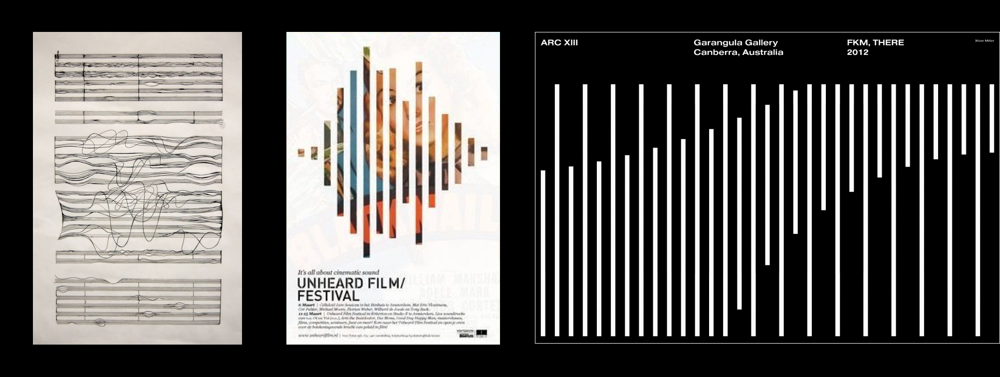
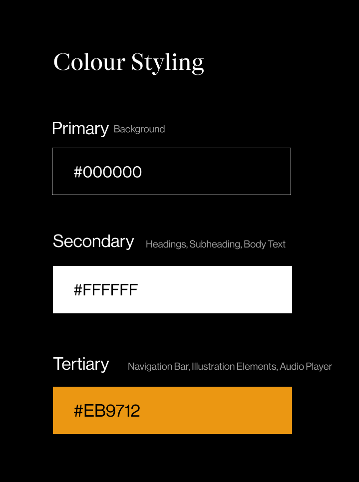
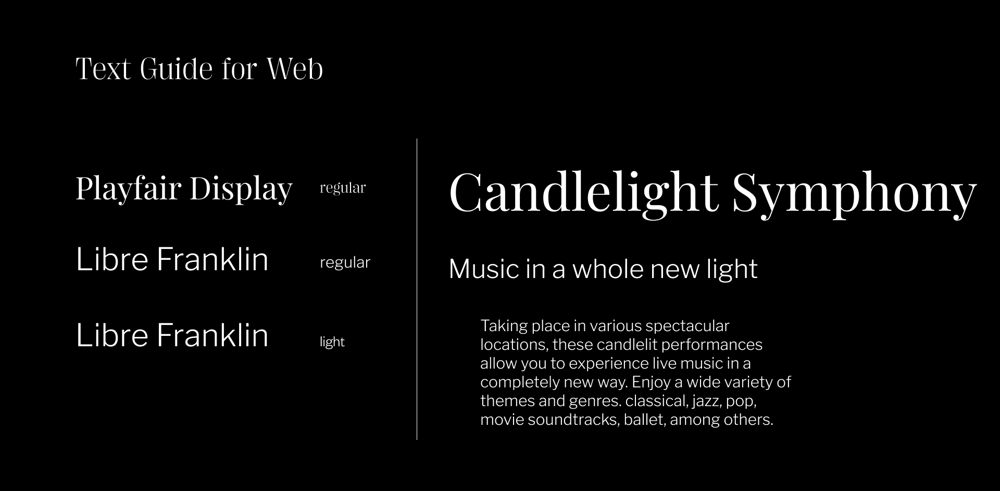
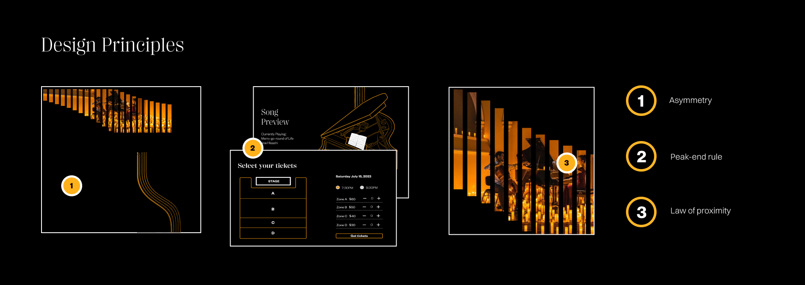

This project was created for a Information Design class where I learnt how to visually translate textual, numerical and evidentiary information as needed within its context. Our client, Candlelight Concert, is a musical experience where classically trained musicians perform illuminated by candlelight in a beautiful location.
Currently, candlelight has very incosistent branding. It is also difficult for users to gain information regarding the concert based on how the webpage is structured. We wanted to simplify the process of purchasing tickers and create a cohesive microsite that communicates the experience of Candlelight Concerts.
Our process began by looking into website for inspiration; Mathilda Gomas for their use of imagery and color in presenting information, Eduardo Luna for the way images are layeered and connect it with type, and Philipp Anthony for their navigation menu
We also did some ARC research to look at patterns that broke the grid, played more with musical influence, and contained a more fluid design language
We also want to ensure our microsite properly communicates to potential patrons the unique experience of the Candlelight Concert series, as such, our design must reflect that.
We developing our new art direction based in part with candle imagery and a decomposition study of Garangula gallery from behance. We also developed a music staff element to match the tone of the website.
 We also came up with a clear style guide for our designs to help with designing and later coding our final desiggn.
Our final solution implemented core design principles to help users navigate the website while ensuring the website remains pleasing to navigate through.
This project really taught me how to do front-end development and the importance of creating website designs that are actually implementable. It also taught me a lot about teamwork and how to share files effectively with my teammates to ensure everything remains up to date.
Due to limited time-constraints, we were unable to fully ensure our website is responsive all throughout. In future projects, I would also push for a final user testing to be done on our final product before we release it.